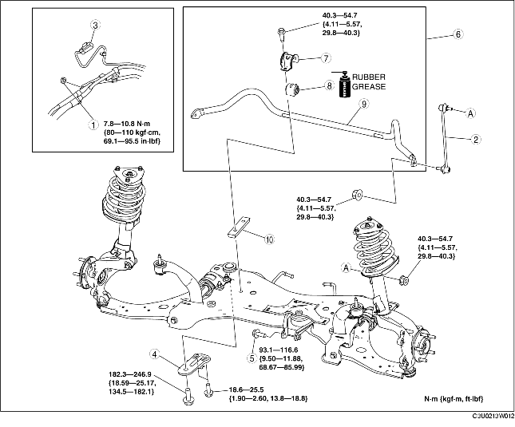

1. Detach the steering shaft. (See STEERING WHEEL AND COLUMN REMOVAL/INSTALLATION.)
2. Remove in the order indicated in the table.
3. Install in the reverse order of removal.
4. Inspect the wheel alignment and adjust it if necessary. (See FRONT WHEEL ALIGNMENT.)

.
1. Support the front crossmember using a jack.
2. Remove the front crossmember brackets.
1. Detach the silencer hangers on the middle pipe from the front crossmember.
2. Lower the front crossmember slowly approx. 90 mm {3.5 in} and remove the front stabilizer component.
1. Secure the stabilizer bracket flange using a vise.
2. Remove the front stabilizer.
1. Verify the installation direction of the stabilizer bushing.
2. Widen the stabilizer bushing opening 16-26 mm {0.7-1.0 in} and install the bushing to the front stabilizer as shown in the figure.
1. Apply grease to the stabilizer bushing.
2. Install the stabilizer bracket using a vise.
1. Tighten the bolts in order indicated in the figure.